1. 起動と画面の見かた
配布は、インストーラー（…-setup.exe）と zip の2通りです。どちらも .NETランタイムを同梱しているので、ほかに入れるものはありません。
動作環境：Windows 10 / 11（64ビット版、x64）。CPU は 2コア・2GHz 程度以上、メモリは 4GB 以上を推奨します（アプリが使うのは 150MB 程度）。ディスクは約 120MB、画面は 1280×800 以上を推奨します。
| 形 | 起動 | ROM・RAM・設定の置き場所（データフォルダ） |
|---|---|---|
| インストーラー | スタートメニューの PC-E500 Emulator | %LocalAppData%\PockeComE500\（利用者ごと） |
| zip | 展開したフォルダの PC-E500.exe | PC-E500.exe と同じフォルダ。フォルダごとコピーしてもそのまま動きます |
インストーラーは、最初に「自分だけ」か「すべてのユーザー」かを選べます（すべてのユーザーは管理者の権限が要ります）。どちらでもデータフォルダは利用者ごとです。データフォルダは、スタートメニューの PC-E500 Emulator のデータフォルダ や、右クリックのメニューの データフォルダを開く で開けます。アンインストールしても、データフォルダは残ります。
データフォルダの中は次のとおりです（zip では PC-E500.exe の横にあります）。
| フォルダ | 内容 |
|---|---|
rom\ | 内蔵ROMのイメージ。起動時にここから読み込みます |
ram\ | RAMカードのイメージファイル（5章） |
drive-x\ | CE-140F（X:ドライブ）の保存先（7章） |
state\ | 設定、内蔵RAMの内容、自動保存、リセット前のバックアップ |
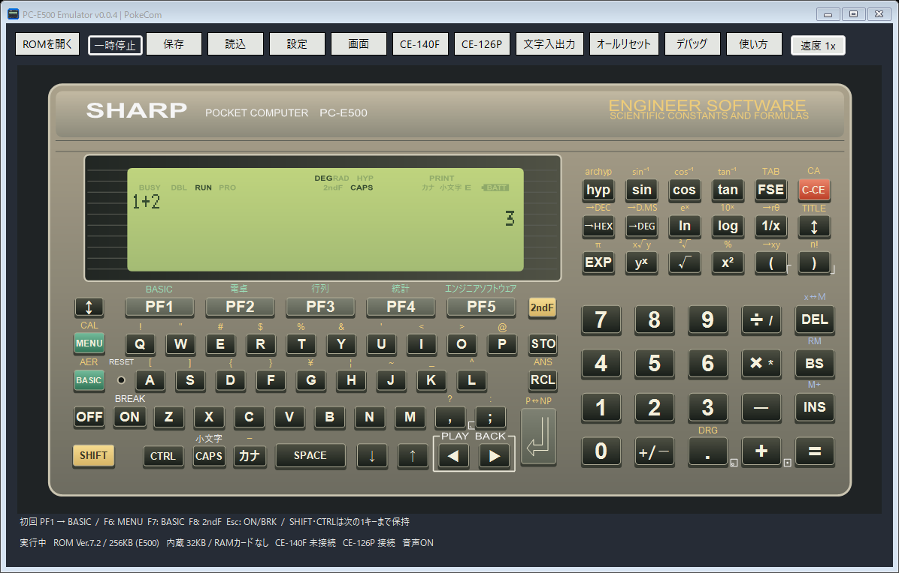
いちばん下の行には、実行状態・ROMのバージョン・内蔵RAMとRAMカードの容量・CE-140Fの接続状態・音声の状態を常に表示します。
2. 最初の操作
初めて起動したとき（またはメモリが空のとき）は、実機と同じくメモリの初期化を求める画面になります。
-

「アタラシイ カードデス / PF1 ショキカ シマス」（英語ROMでは NEW CARD） -
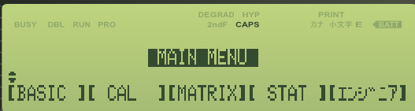
初期化が終わった直後の画面 -

1+2と打って Enter。答えの 3 が右端に出ます1+2と入力して Enter。計算結果が表示されます。
プログラムを入力する
行番号付きのプログラムは PRO 表示で入力します。BASICキーをもう一度押すと RUN と PRO が切り替わります。

10 PRINT 123 を入力したところ入力が済んだらBASICキーで RUN に戻し、RUN と打って Enter で実行します。
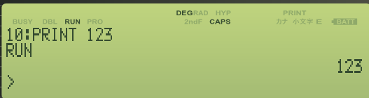
RUN の結果Syntax error になります。プログラム入力の前にPRO表示へ切り替えてください。3. キー操作
画面のキーをマウスでクリックするか、PCのキーボードで入力します。英字は大文字としてポケコンへ送られます。
| PCのキー | ポケコンの操作 |
|---|---|
| 英数字、空白、演算子 | 対応するキー。" : $ などの記号はSHIFT操作へ自動変換 |
| Enter / BackSpace / Delete / Insert | ENTER / BS / DEL / INS |
| 矢印キー | カーソル移動 |
| F1〜F5 | PF1〜PF5（機能キー） |
| F6 | MENU |
| F7 | BASIC（RUN / PRO の切り替え） |
| F8 | 2ndF |
| Esc | ON/BRK（電源ON・実行中断） |
| Ctrl / Shift | CTRL / SHIFT |
| Ctrl+C / Ctrl+V / Ctrl+D | 文字入出力を開く / クリップボードを貼り付け / デバッグを開く |
実機はキーを1/64秒ごとに走査するため、入力できる速さは毎秒18キー程度です。キーを押しっぱなしにしたときは、機械が受け取れる速さで連打し、離せばすぐ止まります。日本語IMEからの入力には対応していません。
4. ツールバーのボタン
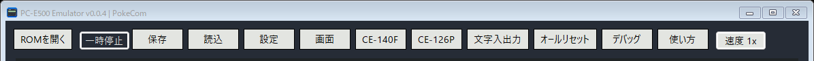
| ボタン | 働き |
|---|---|
| ROMを開く | 別のROMイメージ（PC-E500・E550・1480U・1490U・1490UIIの256KB、またはPC-E650/PC-U6000の384KB）に切り替えます |
| 一時停止 / 再開 | 機械の実行を止めます。止めている間はキー入力を受け付けません |
| 保存 / 読込 | 現在の状態をスナップショットとしてファイルへ保存・復元します（11章） |
| 設定 | 言語、外観、内蔵RAM、RAMカード、CE-140F、音量などを変更します（6章） |
| 画面 | 液晶のリアル表示・コントラストと、ウィンドウの表示を変更します（6章） |
| CE-140F | X:ドライブの通信履歴を表示し、保存フォルダを開けます（7章） |
| CE-126P | プリンタの紙を表示し、テキストや画像で保存・コピーします。プリンタの接続もここで切り替えます（7章） |
| 文字入出力 | 液晶の文字をコピーしたり、クリップボードの文字を入力したりします（8章） |
| オールリセット | 実機の ON＋RESET と同じ操作をします（9章） |
| デバッグ | CPUレジスタとメモリの表示・書き換え、BINの読み書き（10章） |
| 使い方 | この説明書を開きます |
| 速度 | 0.5x → 1x → 2x → 4x の順に実行速度を切り替えます。音を確認するときは 1x にしてください |
「設定」「画面」「CE-140F」「CE-126P」「文字入出力」「デバッグ」は本体を動かしたまま開いておけます。同じボタンをもう一度押すと、開いているウィンドウを前面に出します。
右クリックのメニューと表示の切り替え
本体の絵（またはウィンドウのどこか）を右クリックすると、ツールバーと同じ操作のメニューが出ます。速度、ウィンドウの表示、最小化、終了もここにあります。どの表示でも同じメニューなので、ツールバーやタイトルバーのない表示からもここで戻れます。
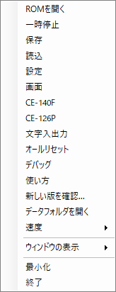
本体のキーのない所をダブルクリックすると、ウィンドウの表示が次のように切り替わります。キーの上のダブルクリックは、ふつうの2回の入力です。
| 表示 | 内容 |
|---|---|
| ① 通常 | タイトルバー、ツールバー、操作ヒント、状態表示のある、いつもの表示 |
| ② 本体だけ | ウィンドウの枠や帯がなくなり、本体の絵だけになります。絵をドラッグするとウィンドウを動かせます |
| ③ 画面だけ | 本体の絵もなくなり、液晶の部分だけになります。ここでダブルクリックすると①に戻ります |
切り替えても液晶の位置と大きさは変わりません。キーボードからの入力は、どの表示でもそのまま使えます。
②③では、本体（または液晶）の縁をドラッグすると大きさを変えられます。縦横の比は保たれ、つかんだ辺の反対側は動きません。表示・大きさ・位置は保存され、次に起動したときもその表示で始まります（保存した位置がどの画面にも入らないときは、位置だけ戻しません）。

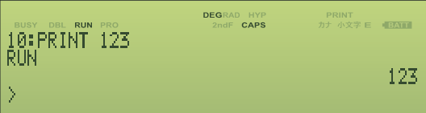
新しい版のお知らせと更新
起動したとき、1日に1回まで、GitHub に新しい版が出ていないかを問い合わせます。新しい版があると、ツールバーの右端に 新しい版 v0.0.4 のようなボタンが出ます（右クリックのメニューの先頭にも出ます）。押すと変更点が表示され、ダウンロードのページを開く でリリースのページを開けます。エミュレータが自分でダウンロードや置き換えをすることはありません。
- エミュレータを終了します。
- リリースのページから、インストーラーで入れた場合は
…-setup.exeを、zip で使っている場合は zip をダウンロードします。 - インストーラーは実行します。zip は、中身を今の
PC-E500.exeがあるフォルダに上書きで展開します。
どちらでも、ROM・RAM・設定・状態はそのまま残ります（インストーラーはデータフォルダに触れず、zip には rom・ram・drive-x・state の中身が入っていません）。お知らせのウィンドウにも、使っている形に合わせた手順が出ます。
右クリックのメニューの 新しい版を確認... で、いつでも確認できます。この版は通知しない を押した版は、自動の確認では知らせません。自動の確認は「設定」で止められます。
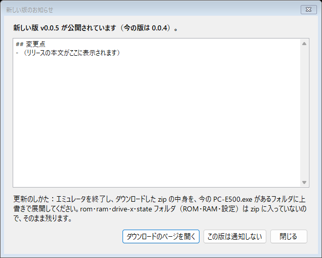
5. RAMカード
RAMカードは、実機のカードスロットに差すメモリカードです。このエミュレータでは 1枚のカード＝1つのイメージファイル として扱います。ファイルの大きさがそのままカードの容量（8 / 16 / 32 / 64 / 128 / 256 KB）で、中身がカードの内容です。実機でカードを差し替えるのと同じ感覚で、何枚でも作って入れ替えられます。
カードの内容は、5秒ごと・電源OFF時・アプリ終了時・カードを外すときに、そのイメージファイルへ書き戻されます。
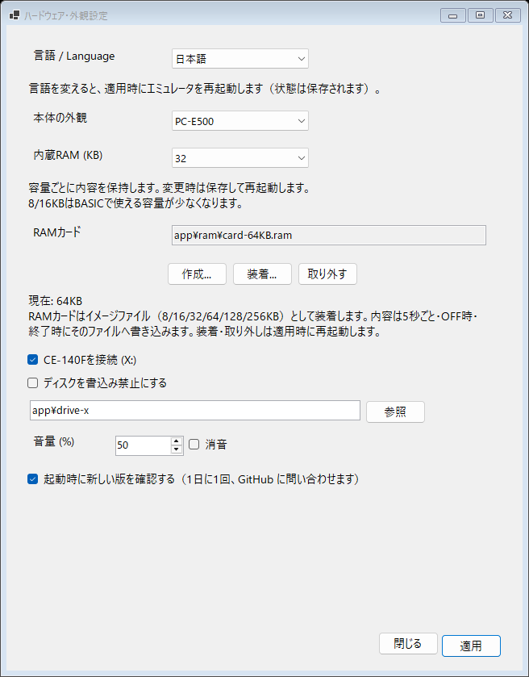
カードを作る
- ツールバーの 設定 を開き、RAMカード欄の 作成... を押します。
-
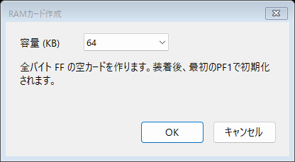
容量を選びます app\ram\に保存します（ファイル名は自由です）。 - 設定画面の 適用 を押します。現在の内容を保存してから再起動し、カードが装着された状態で立ち上がります。
- ROMが新しいカードの初期化を求めるので、PF1（F1）を押します。
状態表示の行に RAMカード 64KB (card-64KB.ram) のように表示されれば装着できています。
入れ替える・外す
| 操作 | やり方 |
|---|---|
| 別のカードに入れ替える | 設定 → 装着... で別のイメージファイルを選び、適用。今のカードの内容はそのファイルへ保存されてから切り替わります |
| カードを外す | 設定 → 取り外す → 適用。スロットが空になります |
| カードを複製する | エクスプローラーでイメージファイルをコピーするだけです（エミュレータを終了するか、カードを外した状態で行ってください） |
6. 設定
ツールバーの 設定 で開きます。変更は 適用 で反映され、内蔵RAMやRAMカードに関わる変更は現在の内容を保存してから再起動します。
| 項目 | 内容 |
|---|---|
| 言語 / Language | すべてのウィンドウとメッセージを日本語または英語にします。適用するとエミュレータを再起動します（状態は保存されます） |
| 本体の外観 | PC-E500 / PC-E650 の筐体を切り替えます。PC-U6000はPC-E650と同じ筐体です。PC-E550・PC-1480U・PC-1490U・PC-1490UIIは、PC-E500の外観で使ってください。外観を変えてもROMは自動で変わらないので、機種に合うROMは「ROMを開く」で選んでください |
| 内蔵RAM (KB) | 8〜256KB。容量ごとに内容を別々に保持するので、元の容量に戻せば以前の内容が戻ります。E650/U6000（384KB ROM）では実機標準の64KBと、増設改造相当の128KB・256KBから選びます |
| RAMカード | 5章を参照 |
| CE-140Fを接続 (X:) | X:ドライブの接続と、書込み禁止、保存フォルダ |
| 音量 / 消音 | BEEPやキークリック音の音量 |
| 起動時に新しい版を確認する | 1日に1回まで GitHub に問い合わせ、新しい版があれば知らせます（4章）。外すと、メニューから確認したときだけ問い合わせます |
画面設定
ツールバーの 画面 で開きます。変更はすぐに反映され、ウィンドウを閉じると設定に保存されます。
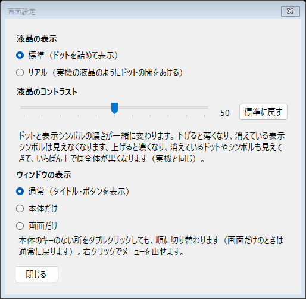
| 項目 | 内容 |
|---|---|
| 液晶の表示 | 標準はドットを隙間なく詰めて表示します。リアルは実機の液晶のように、ドットの間を少しあけて表示します |
| 液晶のコントラスト | 実機のコントラストつまみと同じく、ドットと表示シンボルの濃さが一緒に変わります。下げると薄くなり、消えている表示シンボルは見えなくなります。上げると濃くなり、消えているドットやシンボルも見えてきて、いちばん上（100）では全体が黒くなります。標準に戻すで今までの濃さ（50）に戻ります |
| ウィンドウの表示 | 通常・本体だけ・画面だけを選びます（4章のダブルクリックと同じ） |
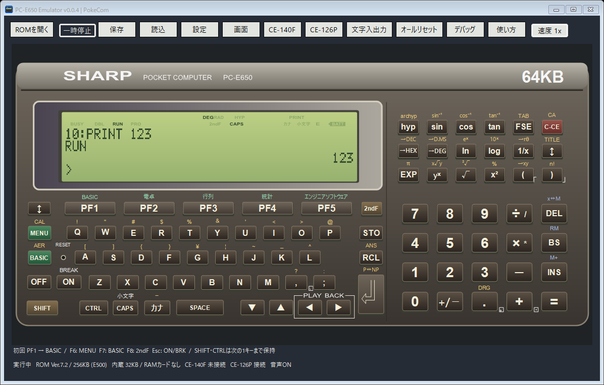

7. CE-140F と CE-126P
CE-140F（X:ドライブ）
フロッピーディスクドライブ CE-140F をエミュレートし、PCのフォルダをディスクとして使います。既定の保存先は、データフォルダ（1章）の drive-x\ です。「設定」で別のフォルダにできます。
SAVE "X:TEST.BAS" ' プログラムを保存 SAVE "X:TEXT.BAS",A ' ASCII形式で保存 LOAD "X:TEST.BAS" ' 読み込み FILES "X:" ' 一覧
ASCII形式のファイルは、CE-140F のエミュレータ（ハード）と同じく、最後に 1Ah（EOF）を付けずに保存します。最後に 1Ah が付いたファイルも、そのまま読み込めます。
OPEN / PRINT # / INPUT # によるファイル入出力、COPY・NAME・KILL・SET・INIT も使えます。ファイル名は英数字・_・- の 8.3 形式です。
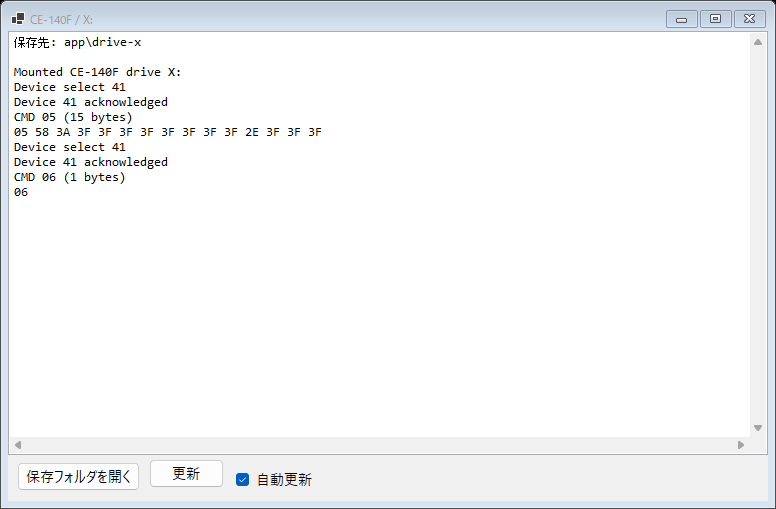
INIT は保存フォルダ内のディスク対象ファイルを削除します。CE-140F専用のフォルダを指定してください。,A なし）で。CE-140F のエミュレータ（ハード）でテキスト（ASCII）を LOAD すると、ハードのエミュレータの不具合で、読み込みの最後に「Undefined line」などのエラーになります（最後の行まで改行があれば、全行は届いています）。通常の形・機械語（SAVE M）は、実機で保存したものと同じファイルになり、問題なくやり取りできます。テキストのファイルは、エミュレータで LOAD してから SAVE "X:..." で保存し直すと通常の形になります。CE-126P（プリンタ）
サーマルプリンタ CE-126P をエミュレートします。ROM のプリンタの処理がそのまま動くので、LPRINT・LLIST・PRINT=LPRINT がそのまま使え、24桁で印字します。
LPRINT "HELLO" ' 1行印字 LLIST ' プログラムの一覧を印字 PRINT=LPRINT ' PRINT の出力をプリンタへ（PRINT=PRINT で戻す）
ツールバーの CE-126P で紙を表示します。紙は ROM の文字のフォントで描き、文字をコピー・テキストで保存・画像で保存（PNG）ができます。紙を切る で紙を空にします。
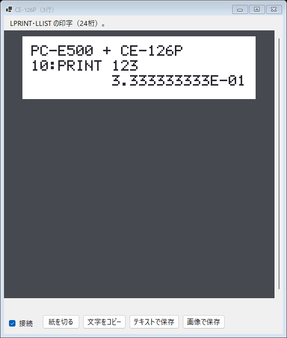
- 接続 を外すと、実機でプリンタをつないでいないときと同じく
Printer errorになります。接続の状態は設定に残ります。 - CE-140F と同じ11ピンにつないだ状態で、両方とも使えます。
- 紙は最大2000行で、古い行から消えます。紙は状態保存には含めません（印字の途中で保存した状態を読み込むと、その行をもう一度最後まで印字します）。
- 印字にかかる時間は再現していません（すぐに印字します）。テキストで保存すると、
¥などの記号も印字のとおりになります。
8. 文字のコピーと貼り付け
ツールバーの 文字入出力（または Ctrl+C）で、液晶の表示を40桁×4行の文字として取り出せます。テキストをドラッグして「選択範囲をコピー」を押すとクリップボードへコピーします。
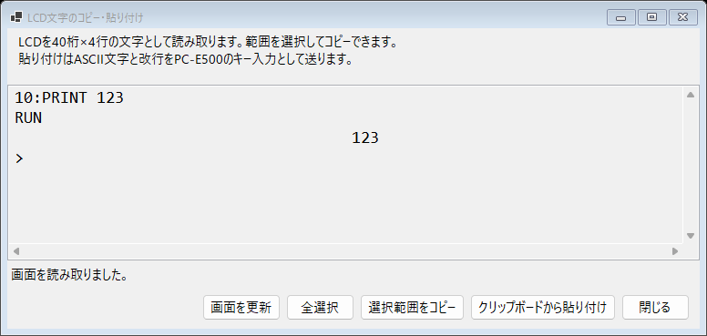
「クリップボードから貼り付け」（または Ctrl+V）は、クリップボードの文字をキー入力としてポケコンへ送ります。改行はENTER、タブは空白4個になります。長いBASICプログラムを流し込むときに便利です。一度に4096文字まで、実機のキー速度で順に入力されるので、長いときは速度を上げると待ち時間が短くなります。
9. リセット
| 操作 | 動作 |
|---|---|
| RESET穴（BASICキーとAキーの間）をクリック | CPUだけを再起動します。内蔵RAMもRAMカードも残ります |
| ツールバーの オールリセット | 実機の ON＋RESET と同じです。ROMが「スベテノ データヲ ショウキョ シマスカ? (Y/N)」と聞いてくるので、Y で全消去、N でそのまま復帰します |

オールリセットの直前の状態はデータフォルダの state\before-reset-日時.e500state に保存されるので、誤って消してしまっても「読込」で戻せます。RAMカードはどちらのリセットでも消えません。
10. デバッグ
ツールバーの デバッグ（または Ctrl+D）で開きます。本体を動かしたまま、0.25秒ごとに自動更新されます（「自動更新」を外すと「更新」を押したときだけ読み直します）。
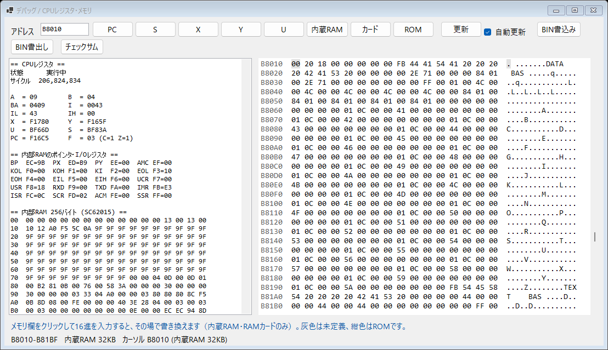
| 左側 | A・B・BA・I・IL・IH・X・Y・U・S・PC・フラグ、実行状態、サイクル数。続けて内部RAM 256バイトと、BP/PX/PY のポインタや KOL〜SSR の I/O レジスタ |
|---|---|
| 右側 | 00000〜FFFFF のメモリを16進とASCIIで表示。右端のスクロールバー、マウスホイール、矢印キー、PageUp/PageDown、Ctrl+Home/End で移動できます |
| アドレス欄 | 16進を入れて Enter で移動（B8000 &HB8000 0xB8000 のどれでも可）。PC・S・X・Y・U の各ボタンはレジスタが指す場所へ、内蔵RAM・カード・ROM は各領域の先頭へ飛びます |
| 下段 | 表示範囲とカーソル位置がどの領域かを表示します |
領域の色分け
| 黒 | 内蔵RAM、RAMカード、それらのミラー ― 書き換えできます |
|---|---|
| 紺 | 内蔵ROM（CE2）、E650/U6000 の拡張ROM（CE3）― 読み出しのみ |
| 灰 | 何も接続されていない領域（カード未装着時のスロット、CE6、内部エリアなど） |
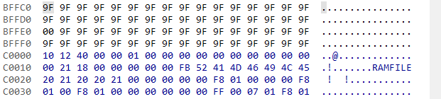
C0000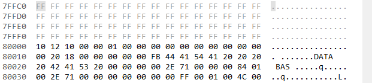
80000メモリの書き換え（バイナリエディタ）
- メモリ欄で書き換えたいバイトをクリックします。カーソルが付き、下段にそのアドレスと領域が出ます。
- 0〜9・A〜F を打つと、上位・下位の順に1桁ずつその場で書き換わります。2桁打つと次のバイトへ進むので、続けて打てば連続して書き換えられます。
- 矢印キーでカーソルを動かせます。書き換えた内容は通常のRAMと同じく自動保存されます。
書き換えられるのは黒い領域（内蔵RAM・RAMカード）だけです。ROMや灰色の領域に打っても変わらず、下段に理由が表示されます。
チェックサム
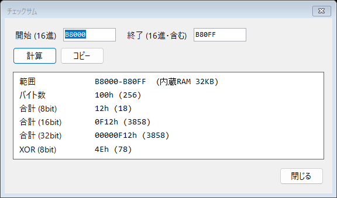
「チェックサム」ボタンで、指定した範囲のメモリの合計を表示します。雑誌などに載った機械語プログラムを打ち込んだあと、掲載されているチェックサムと照らし合わせるのに使います。開始欄にはカーソル位置が入り、終了欄はその FFh 後ろが入るので、必要に応じて書き換えて「計算」（または Enter）を押してください。
| バイト数 | 範囲に含まれるバイト数（16進と10進） |
|---|---|
| 合計 (8bit / 16bit / 32bit) | 全バイトを足した値の下位 8・16・32ビット |
| XOR (8bit) | 全バイトの排他的論理和 |
「コピー」で結果をクリップボードへ写せます。この機能はメモリを読むだけで、書き換えはしません。
BINの読み書き
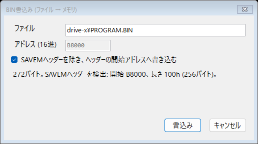
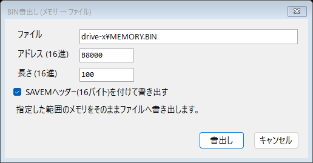
| BIN書込み | ファイルの中身を指定アドレスから書き込みます。CE-140F の SAVE M が作る16バイトヘッダー付きファイルはヘッダーを自動で見つけ、ヘッダーに書かれた開始アドレスへ（ヘッダーを除いて）書き込みます。チェックを外せば任意のアドレスへ書き込めます。書込み先がRAMの範囲に収まっていないときは、1バイトも書き込まずにエラーになります |
|---|---|
| BIN書出し | 指定アドレスから指定した長さ（16進）をファイルへ書き出します。既定では SAVE M と同じヘッダーを付けるので、そのまま LOAD M や BIN書込み で元の位置へ戻せます |
B8000、E650/U6000 64KB なら B0000）付近より、BASICが使わない領域を確保してから書き込んでください。書き込んだ直後に自動保存されるため、うっかりシステム領域を壊したときはオールリセット（9章）で戻せます。11. 保存と復元
何もしなくても、電源を切ったりアプリを終了したりしてもメモリの内容は保持されます。保存先はデータフォルダ（1章）の中です。
| 内蔵RAM | 5秒ごと・OFF時・終了時に state\memory\ の下へ保存。容量ごとに別ファイルです |
|---|---|
| RAMカード | 同じタイミングで、装着中のイメージファイル自身へ保存 |
| スナップショット | CPU・内蔵RAM・液晶・タイマー・プリンタとCE-140Fのバス上の状態を state\ へ自動保存。次回起動時にそのまま続きから始まります |
| 設定 | state\settings.json（ウィンドウの表示・液晶のコントラスト・プリンタの接続なども含みます） |
ツールバーの 保存 / 読込 で、好きなタイミングのスナップショット（.e500state）をファイルに残して戻せます。
CE-140F の通信中やファイルOPEN中はスナップショットを保存・復元できません。CLOSE してから操作してください。プリンタの印字中は、いつでも保存できます。
新しい版で保存したファイルは古い版では読めません（「新しい版のエミュレータで作られています」と出ます）。古い版で保存したファイルは、新しい版で読めます。
12. こんなときは
| 起動時に「アタラシイ カードデス」「NEW CARD」と出る | 正常です。F1 を押して初期化してください（2章） |
|---|---|
| キーを押しても何も起きない | 電源が切れているかもしれません。Esc（ON/BRK）を押してください。「一時停止」中でないかも確認してください |
| 行番号付きの行を入れると Syntax error | RUN表示のままです。BASICキー（F7）でPRO表示にしてください |
| 音が出ない・途切れる | 設定の消音と音量を確認してください。2x・4x では音声の同期は実機どおりではありません。1x で確認してください |
| RAMカードを付けたのに容量が変わらない | 設定画面で 適用 を押しましたか。状態表示の行で装着中のカード名を確認できます |
| 読込で「RAMカードが異なります」と出る | 保存時と同じ容量のカードを装着（または取り外し）してから読み込んでください（11章） |
| 内蔵RAMを全部消したい | オールリセットで Y と答えてください。直前の状態は自動でバックアップされます（9章） |
| 間違ってメモリを壊した | データフォルダの state\before-reset-*.e500state や自分で保存したスナップショットを「読込」で戻せます |
| PC-E650 / PC-U6000 で使いたい | S3A と S3B を結合した384KBのROMイメージ（13章）をデータフォルダの rom\ に置いて「ROMを開く」で選び、設定で外観をPC-E650にしてください |
| Ver.8 の 256KB の ROM で、起動すると横線が出たまま止まる | Ver.8 系（E650/U6000、E500S）の ROM は、本体（S3A）と拡張（S3B）の組です。本体だけでは起動しません。同じ機械から S3B も吸い出し、結合した 384KB のイメージにしてください（13章） |
| ROMやデータをどこに置けばよいか分からない | 右クリックのメニューの データフォルダを開く で開いたフォルダの rom\ に置きます（インストーラーで入れた場合は %LocalAppData%\PockeComE500\、zip の場合は PC-E500.exe の横。1章） |
| LPRINT で Printer error になる | 「CE-126P」ウィンドウの 接続 が外れています（7章） |
| タイトルバーやボタンが消えた | 「本体だけ」「画面だけ」の表示です。右クリックのメニューの ウィンドウの表示 → 通常 で戻ります（4章） |
| インストーラーを開くと「Windows によって PC が保護されました」と出る | インストーラーに署名をしていないためです。詳細情報 → 実行 で進めます |
| 「ROMを開く」で拒否される | 大きさが 256KB / 384KB（またはヘッダー付きで +16バイト）か、S3B だけを開いていないかを確認してください（13章） |
エミュレータで保存したテキスト（,A）を、実機で CE-140F のエミュレータ（ハード）から LOAD すると、最後に Undefined line や I/O error になる | ハードのエミュレータの不具合で、どんなテキストのファイルでも読み込みの最後にエラーになります。エミュレータで LOAD してから、,A を付けずに SAVE し直したファイルを渡してください（7章） |
13. 実機からROMを吸い出す
このエミュレータには内蔵ROMは含まれません。お手持ちの実機からROMイメージを取り出して app\rom\ に置いてください。取り出しには実機側の SAVEM コマンド（メモリをファイルに書き出す命令）を使います。
必要なもの
| 実機 | PC-E500 / PC-E550 / PC-1480U / PC-1490U / PC-1490UII（256KB ROM）、または PC-E650 / PC-U6000（384KB ROM） |
|---|---|
| 保存先の機器 | CE-140F（フロッピー）など、実機の11ピン端子につないでファイルを保存できる機器。PC上でCE-140Fを模擬するソフトを11ピンケーブルで接続する方法もあります。PCで読めるファイルとして取り出せれば何でも構いません |
SAVEMで吸い出す
SAVEM の書式は次のとおりです。d: はつないだ機器のデバイス名で、アドレスは16進を &H で書きます。
SAVEM "d:ファイル名",開始アドレス,終了アドレス
- 実機の電源を入れ、BASICキーで RUN 表示にします。
- 本体ROM（全機種共通）を吸い出します。256KBなので、機器によっては数分かかります。
SAVEM "L:S3A.ROM",&HC0000,&HFFFFF
- PC-E650 / PC-U6000 の場合はこちらも必要です。拡張ROM（128KB）を吸い出します。
SAVEM "L:S3B.ROM",&H20000,&H3FFFF
- できたファイルをPCへ持ってきます。
L: は例です。CE-140F なら X: など、実際につないだ機器のデバイス名に読み替えてください。| ファイル | 範囲 | 大きさ | 内容 |
|---|---|---|---|
S3A.ROM | C0000-FFFFF | 256KB + 16バイト | 本体ROM（CE2）。全機種で必要 |
S3B.ROM | 20000-3FFFF | 128KB + 16バイト | 拡張ROM（CE3）。PC-E650 / PC-U6000 のみ |
吸い出したファイルのヘッダーと修正方法
SAVEM が作るファイルの先頭には、次の 16バイトのヘッダー が付きます。そのぶんファイルはROMより16バイト大きくなります。
| 位置 | 内容 |
|---|---|
| 0〜3 | FF 00 06 01（機械語ファイルの印） |
| 4 | 10 |
| 5〜7 | データの長さ（3バイト、下位から）例: 00 00 04 = 0x40000 = 256KB |
| 8〜10 | 開始アドレス（3バイト、下位から）例: 00 00 0C = C0000 |
| 11〜15 | FF FF FF 00 0F |
機種ごとの修正方法は次のとおりです。
| PC-E500 など （256KB ROM） |
修正は不要です。ヘッダー付きの S3A.ROM をそのまま app\rom\ に置くか「ROMを開く」で選ぶと、エミュレータがヘッダーを見分けて本体ROMだけを読み込みます。ヘッダーを取り除いたきれいな256KBのファイルにしたい場合は、下の結合ツールで --strip を使うか、PowerShellで次のように先頭16バイトを捨てます。
$b = [IO.File]::ReadAllBytes("S3A.ROM"); [IO.File]::WriteAllBytes("PC-E500.rom", $b[16..($b.Length-1)])
|
|---|---|
| PC-E650 / PC-U6000 （384KB ROM） |
S3A.ROM と S3B.ROM を 1つの384KBファイルに結合する必要があります（拡張ROMを先頭、本体ROMを後ろに置く並びです）。下の結合ツールで作ります。S3B.ROM だけを開くと、その旨のメッセージが出ます。
|
E650 や U6000 を含む名前を付けると、結合し忘れとみなして開けません。ROMは 機種名(版).ROM（例：PC-E500(7.2).ROM・PC-E650(8.5).ROM）のような名前にすると見分けやすく、起動時の自動の読み込みでも、同じ機種なら新しい版を選びます。版はステータスバーの「ROM Ver.」で確かめられます。結合ツールの使い方（tools\merge_savem_rom.py）
Python 3 が必要です（python.org から入れられます）。コマンドプロンプトか PowerShell で、app の一つ上のフォルダ（tools フォルダがある場所）に移動して実行します。
| ヘッダーの中身を確認する | python tools\merge_savem_rom.py S3A.ROM S3B.ROM --info開始アドレス・長さ・範囲と、FFで埋まっている割合を表示します。長さの不一致や見慣れないヘッダーには警告が出ます |
|---|---|
| PC-E650 / PC-U6000 用の384KBイメージを作る | python tools\merge_savem_rom.py S3A.ROM S3B.ROM -o app\rom\PC-U6000-full.rom2つのダンプを1つに結合します。 20000-3FFFF のダンプがあれば自動で full（384KB）レイアウトになります |
| PC-E500 用の256KBイメージを作る（ヘッダー除去） | python tools\merge_savem_rom.py S3A.ROM -o "app\rom\PC-E500(7.2).ROM" |
| ヘッダーだけを取り除く（上書き） | python tools\merge_savem_rom.py S3A.ROM S3B.ROM --strip結合せず、それぞれのファイルから先頭16バイトを取り除いて上書きします。元のファイルは残らないので、必要ならコピーしてから実行してください |
| ヘッダー除去済みの本体ROMと結合する | python tools\merge_savem_rom.py S3B.ROM --main-rom PC-U6000.rom --layout full -o app\rom\PC-U6000-full.romすでに256KBにしてある本体ROMを --main-rom で渡します |
実行すると「カバー率」が表示されます。100.0% でなければ吸い出しが途中で欠けているので、未取得の範囲を確認して吸い出し直してください。出力した SHA-256 は同じROMかどうかを確かめるのに使えます。
確認する
- できたファイルを
app\rom\に置き、「ROMを開く」で選びます（PC-E500の256KBなら起動時に自動で読み込みます）。 - 画面いちばん下の状態表示に
ROM Ver.7.2 / 256KB (E500)のようにバージョンと系列が出ることを確認します。バージョンはファイル名ではなくROMの中身から読んでいます。 - 初期化画面が出て、2章 の手順で計算ができれば完了です。
14. 対応範囲とライセンス
SC62015 CPU、256KB / 384KB ROM、内蔵RAMとRAMカード、HD61102 液晶2個（240×32ドット）、キー行列、タイマー割込み、ON/BRK・OFF、実行速度切替、状態の保存・復元、BEEP、フォルダ型 CE-140F、プリンタ CE-126P を実装しています。
未対応: CE-126P 以外のプリンタ、カセット、RS-232C、時計など。液晶のBUSY時間は省略しています。機械語プログラムや周辺機器を使うプログラムは、実機と動作が異なる場合があります。
移植元は matsumo/PockEmul（CPU部分 Copyright (C) Matsumo 1998,1999）で、GPL に基づき提供します。詳細は app\LICENSE と app\THIRD_PARTY_NOTICES.md を参照してください。ROMイメージは本ソフトウェアに含まれません。お手持ちの実機から吸い出してください（13章）。
開発者向けの情報（ビルド、テスト、メモリマップの詳細）は一つ上のフォルダの MANUAL.md にあります。
PC-E500・PC-E550・PC-1480U・PC-1490UII・PC-E650・PC-U6000 の ROM で動作確認済みです。